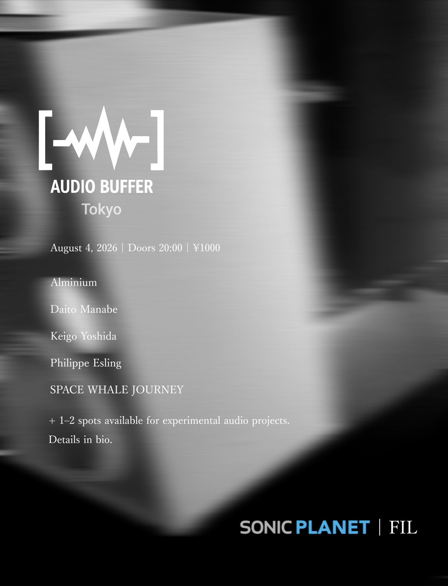
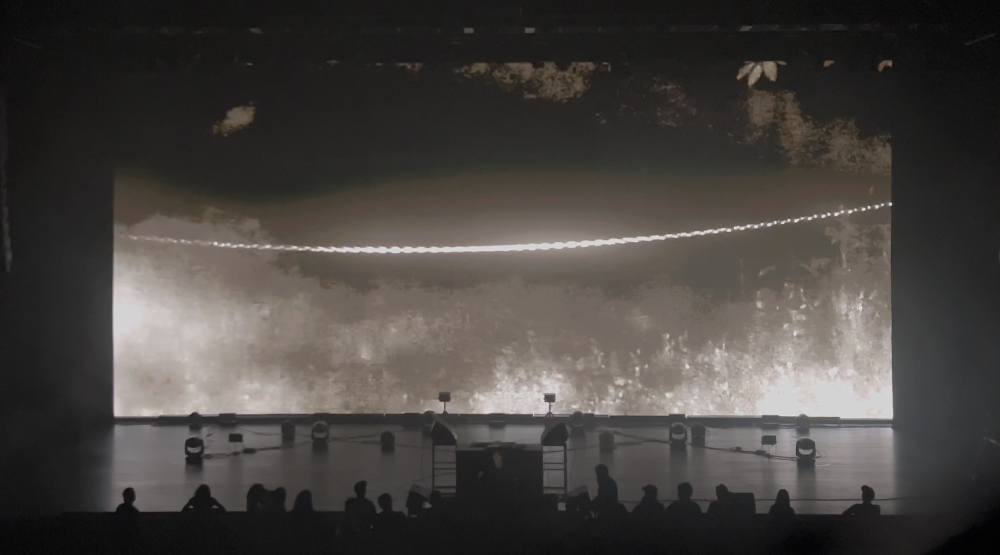
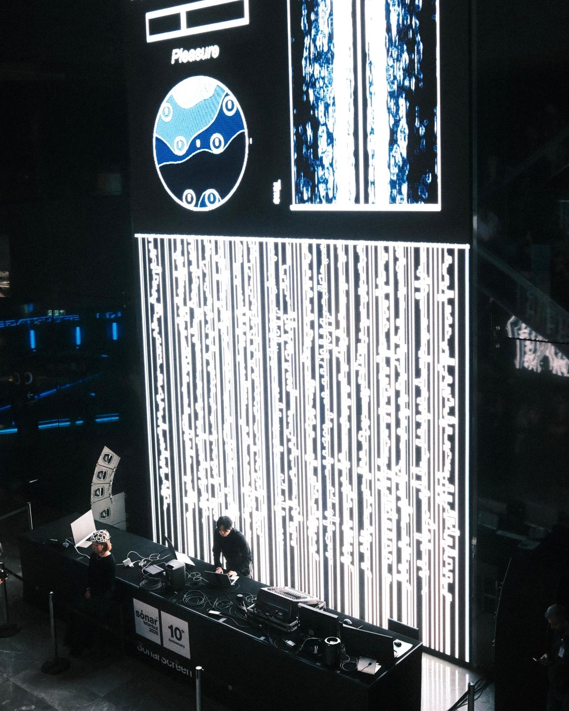

2026.08.04
Audio Buffer Tokyo at FIL

2026.07.11
Vail, A/V performance at Future Frequencies Festival 2026
2026.06.23
Paper published on NIME 2026, Latent Terrain: Adapting Neural Audio Autoencoders as Design Materials in NIME
2026.06.19
liberated frequencies, exhibited at Sónar+D Barcelona 2026

2026.04.11
liberated frequencies, A/V performance at Sónar Istanbul 2026
2026.03.20
liberated frequencies, A/V performance at IRCAM Forum Workshops 2026 Paris / Enghien-les-Bains